Åpningstid og priser
Åpent mandag til fredag, 06.45–17.15.
Mandag til fredag, 06.45–17.15.
Kostpenger: 405 kroner i måneden.
Foreldrebetaling: [Fylles inn].
Fridager: [Fylles inn].
Åpent mandag til fredag, 06.45–17.15.
Mandag til fredag, 06.45–17.15.
Kostpenger: 405 kroner i måneden.
Foreldrebetaling: [Fylles inn].
Fridager: [Fylles inn].
Ring kontoret, 957 67 873, og spør om det er ledig plass.
E-post: post@baardshaugen.no.
Slik søker du: [Fylles inn].
15 faste ansatte. Pedagognormen er oppfylt.
Daglig leder Reetta Järvinen, 411 22 302, reetta@baardshaugen.no.
Ledige stillinger: [Fylles inn].
Åpne søknader: post@baardshaugen.no.
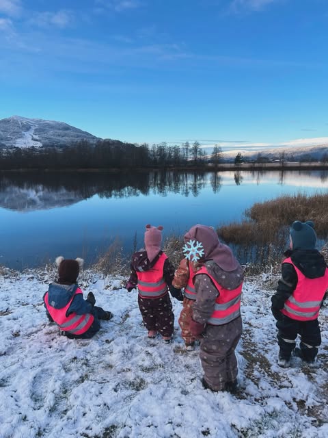
Fra Instagram, 12. november 2026
Vinterens første snø!⛄️❄️
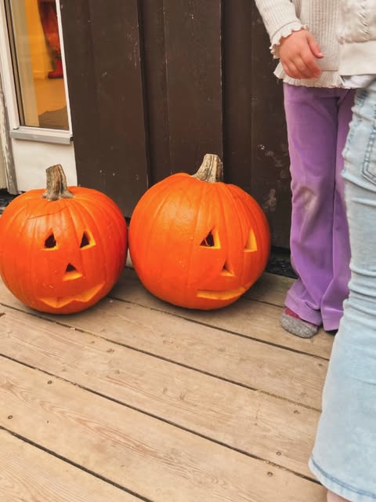
Fra Instagram, 25. oktober 2026
Oktober i Bårdshaugen barnehage 🍂🎃
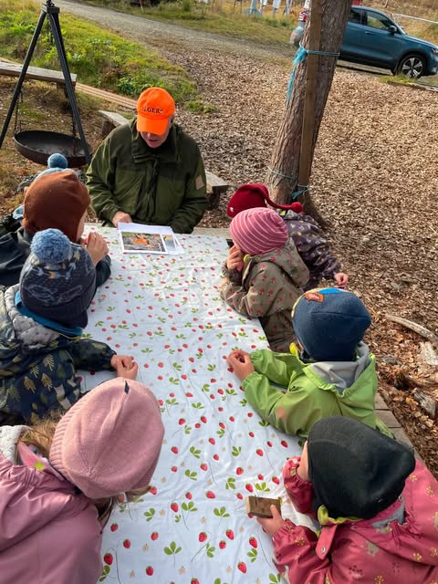
Fra Instagram, 21. oktober 2026
I løpet av september og oktober har vi i Sæterlia hatt tema om hjortedyra. I dag var vi så heldige at vi fikk besøk av en jeger🦌 Han viste oss utstyret som de har i sekken når de er på jakt, og han fortalte hva de bruker utstyret til. Han snakket om hvilke dyr de jakter på og viste oss bilde av hjortedyra, og vi fikk se geviret og skallen til noen av dyra. Tilslutt fikk vi smake på elgpølse og hjortepølse, noe som flere av barna syntes var veldig godt!😃
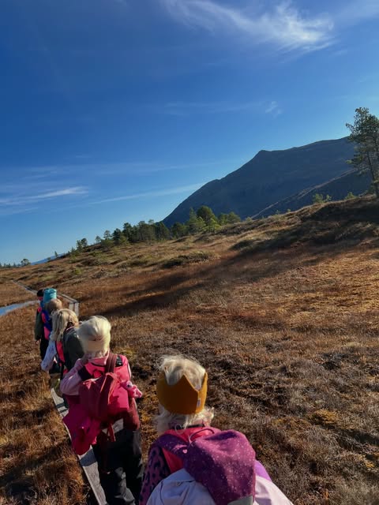
Fra Instagram, 30. september 2026
Fireåringene våre fikk en helt nydelig turdag til Salen i dag 🍂💪🏼 Nistepakken spiste vi til utsikt over Skei og barnehagen før vi lekte oss i skogen 🦌🐻 En fantastisk dag ut i det fri 🍃
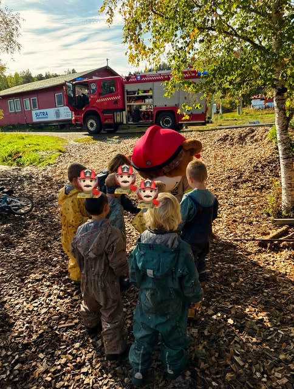
Fra Instagram, 20. september 2026
Brannvernuka er vel overstått og her kommer det litt bilder fra uka som gikk! Høydepunktet var besøk av superhelten Bjørnis, han kom innom både i Sæterlia og på Bårdshaugen 🔥 I løpet av uka har vi lekt brann, både slukket med vann og ringt 110 på hjemmelagde telefoner, laget brannslukningsapparat, tegnet til Bjørnis og hatt flere samlingsstunder om brannvern. Barna har gjennomført brannøvelser og blitt drillet om viktigheten av å komme seg kjapt ut, løpe til avtalt møteplass og vente på å bli opptelt av en ansatt 🚨🚒🧯
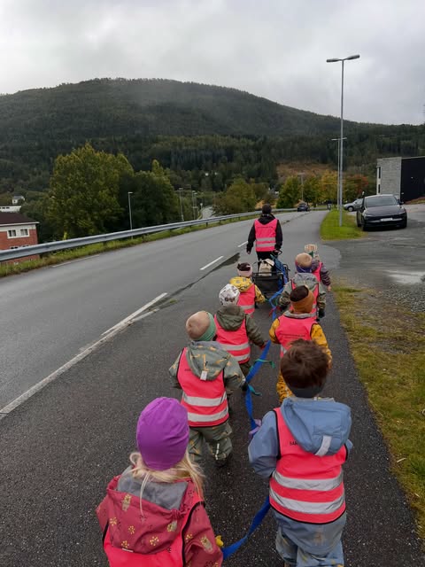
Fra Instagram, 3. september 2026
Bilder fra barnehageårets første turdag for treåringene våre. Vi gikk til den magiske skogen ved folkehøyskolen, der klatra vi over røtter, under kratt og spiste villbringebær før det ble lunsj ute i det fri. Gjengen imponerte stort med vilje, evne og masse turglede❣️Etter turen hvilte vi i Gammå vår og spiste grønnsaker og dip 🥦🥕 Takk for turen! 🥾
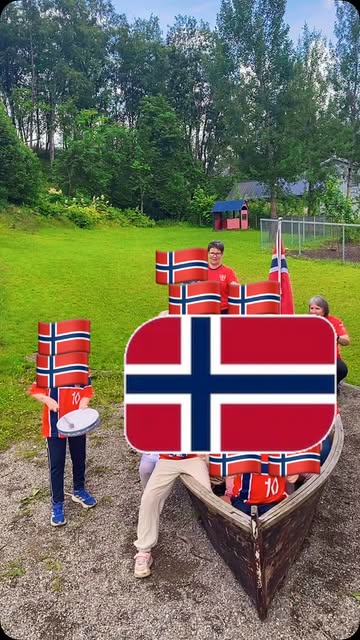
#heianorge🇳🇴
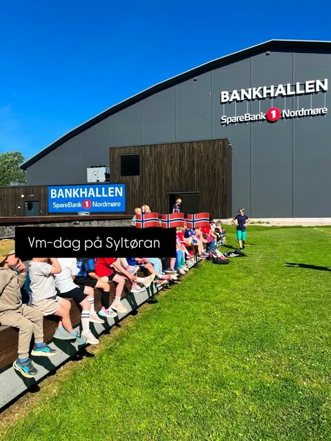
På onsdag arrangerte vi VM-dag på Syltøran. Vi startet med ulike stasjoner med flere øvelser, blant annet straffekonk, stafett og kamp. Etter ei økt i solsteken kom Linn Beate og Silje fra Kiwi med smoothie og frukt til barna, Kiwi er hovedsponsor for herrelaget i fotball og ville gjerne delta på dagen vår 😊 En herlig dag med masse fotballglede og samhold ⚽️🇳🇴
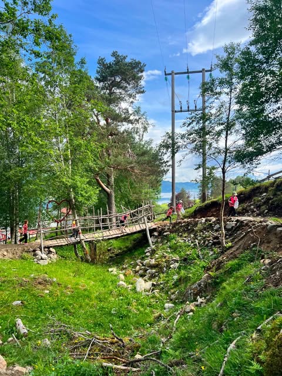
Førskolegjengen har hatt avslutningstur hos Opp & ut hos Nina. Gøy å være med å mate dyra og hilse på alle de forskjellige dyra 🐐🦙🐑🐶Barna fikk sitte på hjemmesnekra moped og kosa seg med pølse med brød på slutten av dagen🌭 Barna kom tilbake til Sæterlia kl 18 på kvelden, klare for overnatting! Barna fikk laga egen minipizza, filmkveld med potetskruer og solrik før vi tok kvelden i soveposene våre :) Alle barna overnatta og sov natta gjennom, tross tidlig start på dagen. Vi laga oss frokost med rundstykke, nugatti,egg og mye godt pålegg! 😄
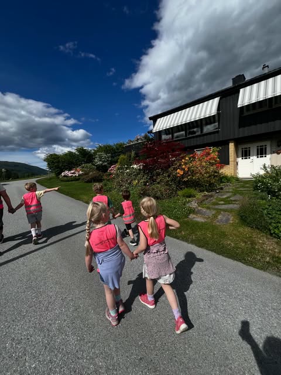
I dag gikk førskolegruppa på tur i finværet! Vi dro til lekeplassen i Buhagen før ferden gikk videre til skolen og storefri 📖 Vi avslutta turen med en is i solveggen på Skei ☀️🍦
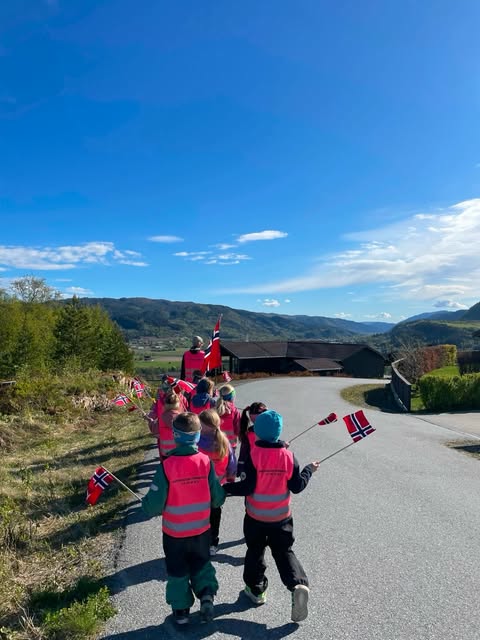
Bilder fra markeringa av nasjonaldagen oppi Sæterlia og på Bårdshaugen. Det ble tradisjonen tro både tog-ganging, is, sodd og leker ute 🍦🇳🇴 Vi ønsker alle en fin 17. mai!
46 barn mellom ett og fem år. Foreldreeid, uten utbytte. Midlene brukes i barnehagen.
På Instagram-profilen, avlest 17. november 2026, står det: «Privat barnehage i Surnadal med 40 flotte barn og 17 engasjerte, tydelige, trygge, varme, positive og blide ansatte😄...»
Tallene i bioen (40 barn og 17 ansatte) avviker fra Udir og stillingsannonsen (46 barn og 15 faste). Hvilke tall som gjelder nå: [Fylles inn].
Bildene under er hentet fra bardshaugen_barnehage. Ingen innbygging eller sporing.